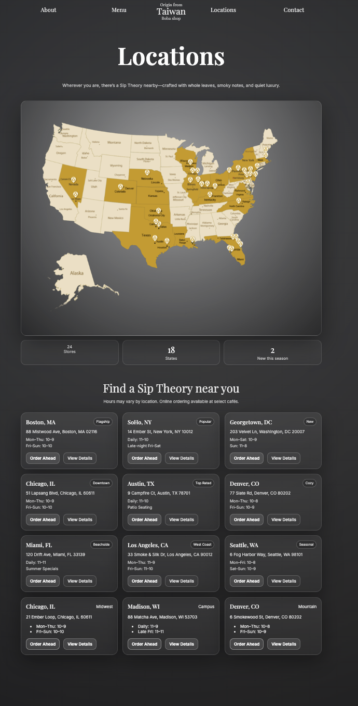

Story-based scrolling


Sip Theory
Sip Theory reimagines boba ordering as a slow, immersive ritual. Instead of clutter and urgency, the design reduces cognitive load and encourages intentional browsing.

Most boba sites are cluttered and high-energy.
The UI should match the calm product experience.
Slow, story-based vertical scrolling.
Reduce stress and improve browsing flow.


